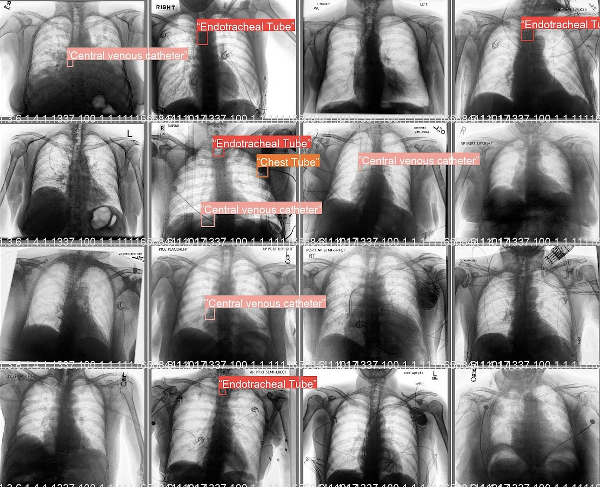

Built a two-stage chest x-ray pipeline: a multi-label classifier for device presence and a YOLOv5 detector for localization, reaching ~97% detection accuracy across heterogeneous validation sets.
Project Overview
The system preprocesses radiographs, predicts likely device classes, and then performs class-conditional bounding-box inference. Separating classification from localization reduced false positives and improved reliability under varied acquisition conditions.
Some details
It was high school sophomore year summer, and like any kid, I was wondering deeply about the future applications of computer vision to radiology. Just kidding -- I think I was still playing Minecraft. But, I got to be part of the first cohort of Stanford AIMI's amazing research internship, with my two favorite CS friends, Sarah and Aarav.
As a team, we were given CheXpert, Stanford Medicine's dataset of x-rays containing medical devices inside them. Our objective was to figure out whether there were devices in the x-rays, and if so, which devices they were.
Our first objective was to develop a simple classifier that would allow us to determine *whether* there were devices in the x-rays. After getting through the weeds, for the first time, of dealing with massive amounts of data and strange image formats, we got started on finetuning ResNet50, and adding on a classification head.
Next, we wanted to know which devices were present. We finetuned YOLOv5, obtaining 97% accuracy for bounding boxes on a diverse set of chest x-ray validation cohorts. Training and evaluation were implemented in Python with dataset augmentation and threshold tuning to balance precision/recall. At inference time, the classifier gates candidate classes and the detector returns localized boxes, enabling downstream QA and faster radiology review workflows.
But...
Hey, we wrote a cool article here! this Medium article.